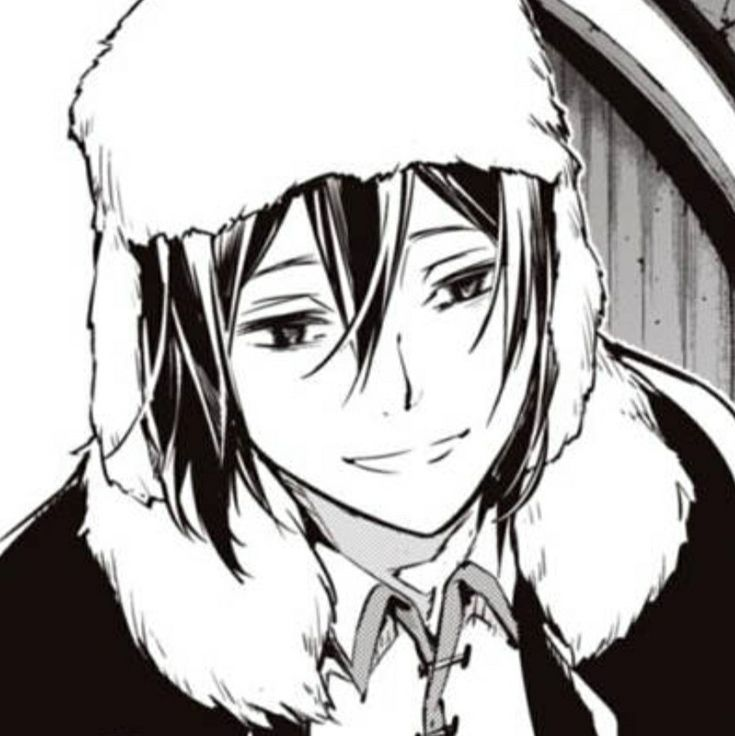
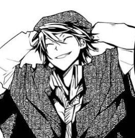
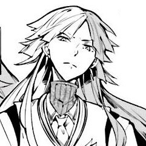
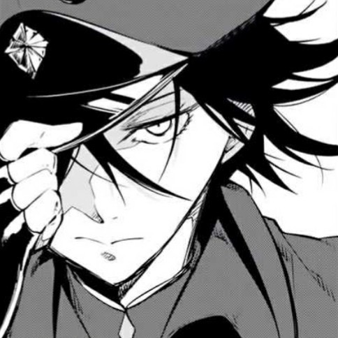

Currently a student at ESSEC Business School, I am learning programmation thanks to Le Wagon.
You can discover more about me below !
I love cooking, baking, doing sports and anime ! Animes I have been watching lately:
Moriarty The Patriot - Bungou Stray Dogs - Buddy Daddies - The Case Study of Vanitas
   
I'm lucky to have supportive family members as well as supportive friends.
I live with my mother, my father and my sister.
With my tight schedule I don't get to spend time with them as much as I'd like, so I cherish our moments together.
I'm very grateful for my boyfriend, who's been my biggest fan for the last 5 years. He's also my anime-buddy !
I was born in 2003 and have explored the world ever since.
After obtaining my high school diploma at an international high school, I tried med school, which I didn't like.
Fate brought me to my current business school, and I love everything: the atmosphere, the buildings, the school spirit... and I met some great people !